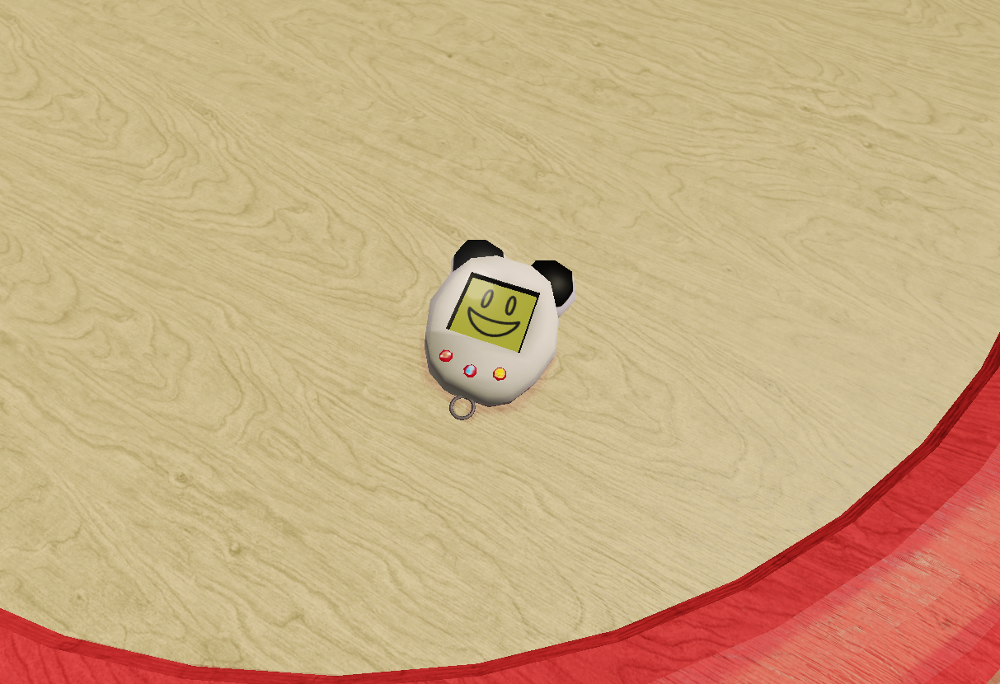

Pal Percy. A handheld digital companion or virtual pet that got recalled for being too dangerous.
This one was found in the ruins of an old theme restaurant for kids.
The battery compartment had battery acid corrosion, fixed with a q-tip and some vinegar -Manatee
Once recovered, was extremely energetic and chaotic, often claiming to be everyone's best pal.
They don't get along with some of our companions but managed to make some friends.